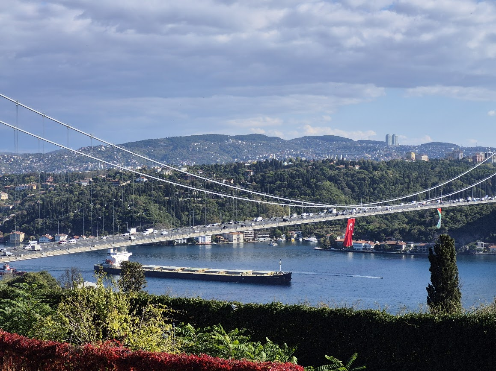
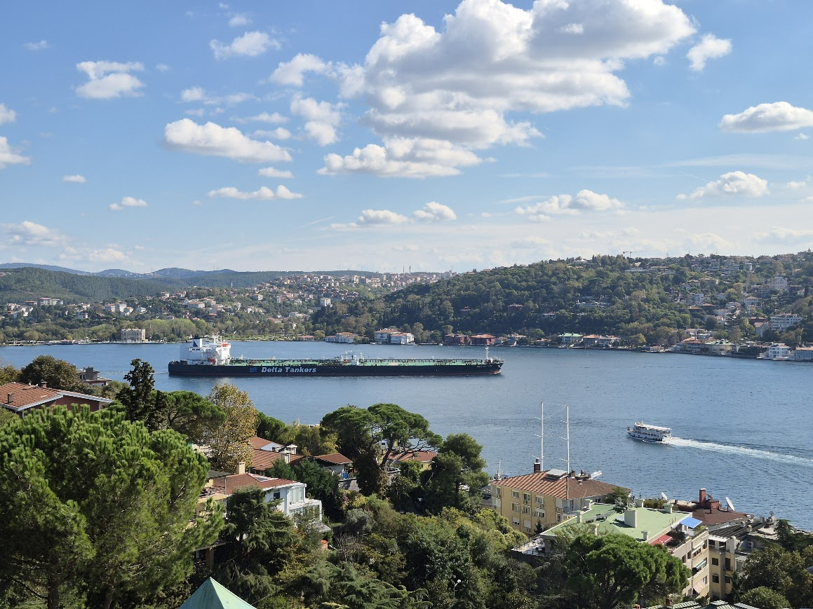
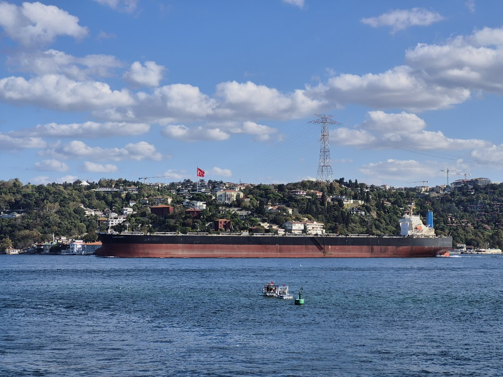
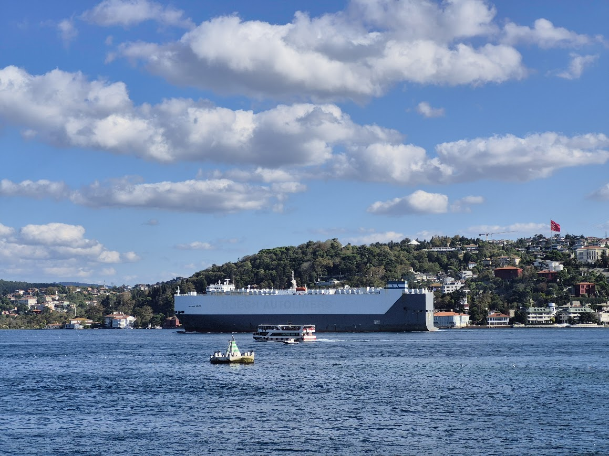
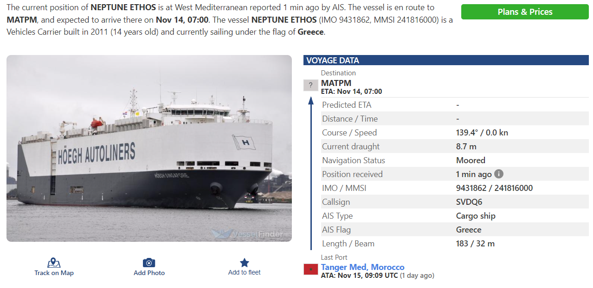
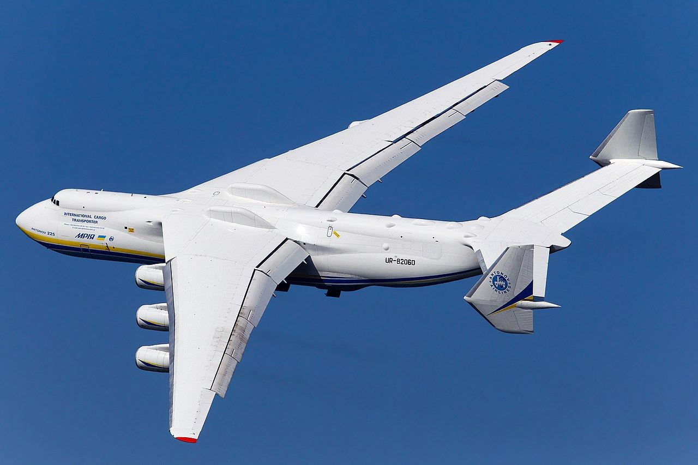
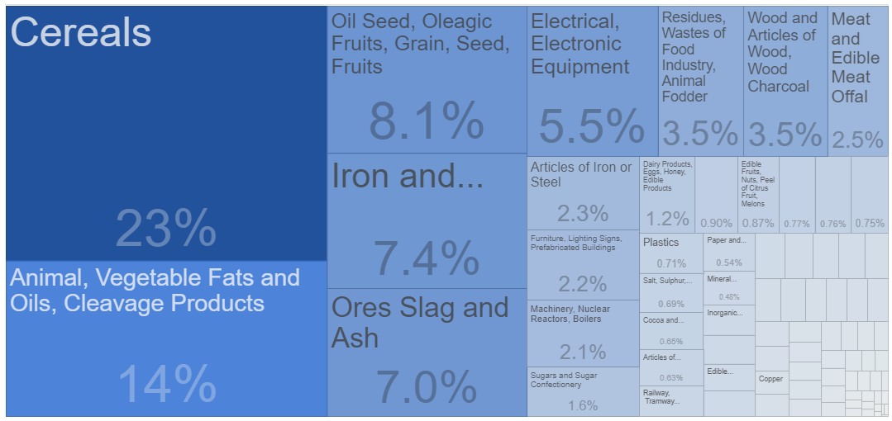
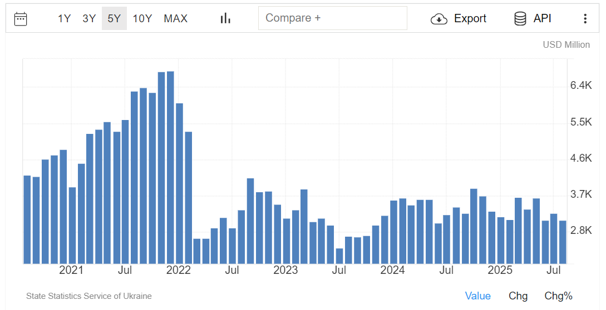
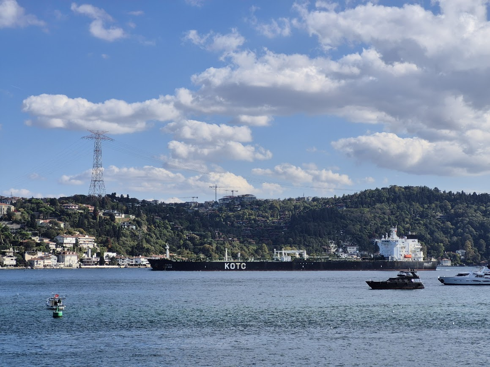
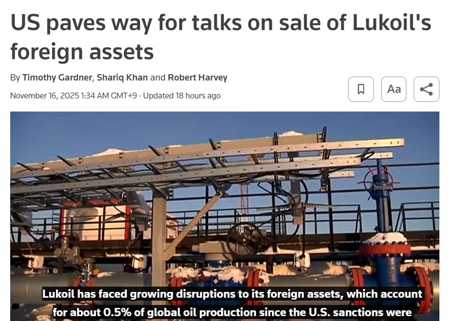

이스탄불 여행 (2) - 벌크선과 유조선
게시: 2025-11-20T06:30:44+09:00
보스포러스 해협을 지나가는 선박들을 보면, 작은 여객선 혹은 유람선, 요트 등도 많았지만 대형 선박들은 당연히 모두 화물선이었습니다. 화물선에도 나름 종류가 많습니다. 가령 PCTC(Pure Car Truck Carrier)라고 하는 자동차 운반선과 같은 특수화물선도 있습니다만, 크게 나누면 아래와 같이 4가지로 볼 수 있습니다. 1) 벌크선 (Bulk Carrier) : 포장되지 않은 화물을 대량으로 싣는 선박. 주로 곡물·석탄·철광석·비료·시멘트 등. 2) 컨테이너선 (Container Ship) : 표준 컨테이너(TEU 단위) 적재. 전 세계 물류의 핵심. 3) 유조선 (Tanker) : 액체 화물을 벌크로 운송. 원유·정제유·케미칼·LNG 등. 4) 일반화물선 (General Cargo / Multi-purpose Ship, MPP) : 컨테이너, 박스, 목재, 중량화물 등 다양한 화물 혼재 가능. 그런데 제가 베벡 스타벅스에 앉아서 보니 보스포러스 해협을 통과하는 화물선 대부분은 벌크선이었어요. 그리고 그보다 더 중요한 것이, 동쪽, 그러니까 흑해쪽으로 가는 배들은 모두 흘수선 아래의 빨간 칠을 크게 드러낸 모습이었고, 지중해쪽으로 가는 배들은 모두 빨간 칠이 거의 보이지 않았습니다. 즉, 흑해로 들어갈 때는 텅 빈 상태이고, 나올 때는 화물을 가득 싣고 나온다는 뜻입니다.

(지난 편에 올렸던 사진입니다만, 왼쪽이 흑해쪽, 오른쪽이 지중해쪽입니다. 저 대형 화물선이 흑해 연안에서 뭔가를 잔뜩 싣고 지중해로 나가고 있습니다. 저건 유조선일까요, 벌크선일까요? 저 갑판 위에 몇 개의 대형 뚜껑 같은 것들이 보이는데, 저건 전형적인 벌크선의 모습입니다. 아마 러시아 또는 우크라이나에서 곡물이나 비료를 싣고 나가는 것이겠지요.)

(이건 유조선입니다. 윗 사진 속 벌크선과는 달리 갑판에 대형 뚜껑 같은 것이 없고, 매끈한 갑판에 파이프라인 같은 것들이 보입니다. 이건 틀림없이 러시아에서 석유를 싣고 나가는 것 같습니다.)

(흑해에서 지중해로 나가는 배들은 윗사진들처럼 뭔가 잔뜩 싣고 깊이 가라앉은 모습인데, 지중해에서 흑해로 들어가는 배들은 저렇게 높이 솟은 텅 빈 배였습니다.)

(몇 시간 동안 보다 보니, 저렇게 RoRo선(Roll-on/Roll-off Ship) 즉 자동차 운반선도 지나가긴 하더군요. 저런 RoRo선은 자동차를 싣고 내리는 방식의 특성 때문에 저렇게 물 위로 솟은 선체 부분이 높아서 무게 중심도 높은 것이 특징이고, 그래서 자동차를 싣지 않은 상태에서도 뱃바닥의 ballast tank에 물을 잔뜩 채우고 간다고 합니다. 저 배도 흑해 연안국 어딘가로 자동차를 잔뜩 싣고 가는 것으로 보입니다.)

(윗 자동차 운반선의 사진을 확대해보면 저 배 이름이 Neptune Ethos로 나옵니다. 찾아보니 그리스 선적의 선박인데, 이 글을 쓰는 일요일 저녁 이 순간에는 모로코 탕헤르에서 출발하여 지브랄타에 막 도착한 상태네요. 돈을 더 내면 저 때는 어느 항구에서 출발하여 어느 항구로 갔었던 것인지 알 수도 있는 모양인데, 그렇게까지 궁금하지는 않습니다.) 이건 흑해 연안 국가들에게 별로 좋지 않은 이야기입니다. 수출할 물품이 1,2차 산업 생산물, 그러니까 곡물이나 철광석, 비료 뿐이라는 것은 고도로 산업화된 나라에서는 잘 하지 않는 일이니까요. 물론 그런 것들만 수출하고도 잘 사는 호주 같은 나라도 있긴 합니다. 그런데 더 나쁜 것은 컨테이너선이 그다지 많이 지나가지 않았고, 그나마 컨테이너를 잔뜩 싣고 가는 것은 모두 지중해에서 흑해로 들어가는 배들 뿐이라는 것입니다. 부가가치가 높은 공산품은 그냥 수입만 한다는 것이니까요. 흑해를 출입하는 화물선이라고 하면 아무래도 우크라이나와 러시아를 생각하기 쉬운데, 실은 그 두 나라 빼고도 불가리아, 루마니아, 조지아(그루지야), 그리고 당연히 튀르키예도 있습니다. 우크라이나는 러시아의 침공으로 오데사(Odessa) 및 그 주변의 일부 항구를 제외하고는 모든 해안선을 잃었고, 그나마 오데사 항구는 러시아의 잦은 공격으로 오데사 항구를 통한 수출입이 원할한 편은 아니라고 하니까, 상황이 더욱 좋지 않을 것입니다.

(원래 우크라이나는 꽤 산업화가 진행된 곳으로서, 철강업, 항공기 제조 및 조선업이 발달했습니다. 세계 최대의 항공기였던 Antonov An-225 Mriya는 우크라이나 회사인 Antonov ANTK에서 1988년에 만들어졌습니다. 이 항공기도 이번 러시아 침공 때 파괴되었는데, 뭔가 안 좋은 방향으로 상징적이라 마음이 아픕니다.)

(우크라이나의 수출은 일부 철강 및 공산품도 있지만 주로 곡물 등의 농산물이 많습니다. 이 표는 2024년 자료입니다.)

(그나마 농산물 수출이라도 원활하면 좋을 텐데, 전쟁이 시작된 이후로 수출량이 급감했습니다. 조속히 종전이 되기를 바랍니다.) 그런데 계속 지켜보다 보니, 분명히 원유인지 정제유인지를 잔뜩 실은 유조선이 지중해 방향이 아니라 흑해 방향으로 항진하는 선박이 보였습니다. 바로 아래 사진입니다.

(갑판 위의 파이프라인들을 굳이 보지 않아도 저건 유조선입니다. 왜냐하면 저기 적힌 KOTC라는 이름은 Kuwait Oil Tanker Company를 뜻하는 것이기 때문입니다.) 그 모습을 보니 궁금증이 생겼습니다. 산유국이자 원유 및 정제유의 수출국인 러시아가 쿠웨이트산 원유나 정제유를 수입할 것 같지는 않고, 저 유조선은 어디로 가는 것이었을까요? 혹시 우크라이나? 전쟁 중인 우크라이나는 정제유가 잔뜩 필요할 테니 어디선가 수입을 할 터인데, 요즘 오데사 항구로 정제유를 수입할 상황이 되나 궁금했습니다. 우크라이나의 정유 시설은 전쟁으로 대부분 파괴되었거나 러시아군에게 점령당했다고 알고 있어서, 원유를 수입할 것 같지는 않았거든요. 그때 스마트폰으로 대충 검색을 해보니, 제 짐작대로 오데사 항구는 러시아의 잦은 공격 때문에, 인화성 정제유를 안정적으로 하역할 형편은 되지 못한다고 합니다. 물론 전쟁 중인 나라의 연료유 수출입 정보는 군사 기밀에 준하는 내용이니까 인터넷에 다 공개되어 있지는 않겠지요. ChatGPT와 Gemini에게 물어봐도, KOTC 유조선이 흑해로 들어간다면 그건 불가리아나 루마니아로 가는 배일 가능성이 높다고 합니다. 그러면 우크라이나는 대체 어떻게 석유류를 수입하고 있을까요? 주로 그리스, 폴란드, 루마니아, 불가리아 등을 통해 수입을 하는데, 주로 육로를 이용한다고 합니다. 국경을 접하고 있는 폴란드나 루마니아는 그렇다치고, 그리스는 대체 어떻게 우크라이나에 석유를 수출하는 것일까요? 물론 바다를 통해, 즉 보스포러스 해협을 통해 수출합니다. 그러나 러시아 미쓸과 드론이 언제 날아들지 모르는 오데사 항구를 통할 수는 없으니, 일단 그리스에서 출발한 유조선은 일단 루마니아나 불가리아에 정제유를 하역하고, 거기서 트럭과 철도 등을 이용하여 우크라이나로 운송된답니다. 원래대로라면 불필요했을 육상 운송비가 추가되므로 가뜩이나 비싼 정제유가 더욱 비싸지는 것입니다. 그런 사정을 읽다보니 답답해지는데, 더 검색을 하다보니 더 어처구니 없는 사실도 있더군요. 불가리아도 우크라이나에 석유류를 많이 수출하는데 그 중 일부는 그리스 등지에서 수입된 것이지만, 상당 부분은 러시아산이라는 것입니다. 불가리아에는 정유공장이 부르가스(Burgas)에 딱 하나 있는데, 그 정유공장은 러시아의 세계적 석유기업인 루크오일(Lukoil) 소유로서, 러시아산 원유를 수입해서 정제하는 공장입니다. 불가리아는 EU로부터 그 특수성을 인정받아 한시적으로 러시아산 원유 수입을 허락받았는데, 그 조건 중 하나가 그렇게 생산된 정제유 중 일부는 우크라이나에 수출한다는 것이었답니다. 그러니까 우크라이나는 다른 나라들에게는 러시아산 석유를 수입하는 것은 러시아에게 전쟁 자금을 대주는 꼴이니 사지 말라고 비난해왔는데, 정작 자기 자신은 러시아산 석유를 간접 수입한 셈입니다. 반대로 러시아 입장에서도, 러시아군과 싸우는 우크라이나군에게 러시아가 연료 보급을 해주는 셈이라는 것을 뻔히 알면서도 수출을 한 것이고요. 이건 정말 미친 짓거리인데, 하긴 전쟁이라는 것이 미치지 않고서야 할 수 없는 짓거리이니 딱히 이상할 것도 없습니다.

(불가리아의 부르가스 정유공장 관련하여 받았던 유예 기간이 이제 끝났기 때문에, 불가리아도 이제 난리가 난 상황입니다. 미국도 완전히 판을 깨고 싶지는 않은지, 불가리아든 제3자든 누군가가 부르가스 정유공장을 루크오일에게서 매입하는 협상을 벌이는 것은 허락하겠다고 합니다.) 그런데, 이런저런 것을 알아보면서 눈 앞을 지나가는 배들을 보고, 또 바로 옆에 있는 루멜리 요새를 보다보니, 고대 비잔티움 시절부터 이 해협을 통과하는 선박들로부터 통행세를 걷었다는 것이 생각났습니다. 튀르키예도 이 선박들로부터 통행세를 걷고 있을까요? 그 이야기는 다음 주에...